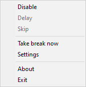

Enso Retreat Help
The Context Menu

- Disable - temporarily disable Enso Retreat for the time specified in settings.
- Delay - delay a break for the specified time.
- Skip - skip a break (available once per day).
- Take Break Now - lock the system immediately.
- Options - show the options dialog.
- About - show copyright and versioning information.
- Exit - close Enso Retreat.
Behaviour Settings
Periodic Breaks
A periodic break occurs once in a specified period of time (near to the end of it).
- Period Duration - period duration in minutes.
- Break Duration - break duration in minutes.
- Disable for - the amount of time used to disable Enso retreat from the context menu.
- Turn Off Periodic Breaks - use only scheduled breaks.
- Synchronize With System Time - if checked, the start of a period is attached to the beginning of an hour. Otherwise, periods are measured from the program start time.
Delays
- Alert Time - show an alert by the specified time before the start of a break.
- Delay Time - it is possible to delay a break several times for the time specified in this setting.
- Number of Delays - specifies the maximum number of available delays.
- Play Sound at the Break End - play a system or custom sound after the break ends.
Appearance Settings
Window
- Mode - select how Enso Retreat will look when locking the system:
- Fullscreen - show a fullscreen image.
- Windowed - show image in a window matching the image dimensions.
- Opacity Level - an opacity level of the Enso Retreat window (0-255). It is also adjustable with +/- numpad keys during the break.
- Background Color - the background color of the Enso Retreat window areas not covered by the displayed image.
- Allow Transparent Regions - allow completely transparent areas. The transparent color is selected from the upper-left pixel of the displayed image.
Timer
- Show Timer - the timer will not be displayed when unchecked.
- Timer Font Color - the color of timer text.
Media
- Image Folder - if specified, a random image will be selected from this folder to show during a break. To show only one specific image, store a single image in this folder. JPEG, PNG, GIF, and BMP image formats are supported.
- Stretch Images - stretch images if they are too small to fit the screen.
- Sound Folder - the folder for sounds to be played at the end of a break randomly. Supported audio formats are: WAV, MP3, WMA, and FLAC. If not specified, Enso Retreat will play the standard system sound.
Scheduled Breaks
A scheduled break occurs exactly at the time specified by a Crontab record.
For example, you can use the crontab record, shown on screenshots below, to make 15 min. breaks at 13:00 on each working day.
Leave the "Display Message" field blank, if you don't want any messages to be displayed after the end of a break.
Use "Add..." and "Remove" buttons to add and remove schedules, double click to edit the break.
Field
Allowed value
Allowed special characters
Minute
0-59
* , -
Hour
0-23
* , -
Day
1-31
* , - L
Month
1-12
* , -
Days of week
1-7
* , - L
Restrictions
Enso Retreat allows to automatically skip breaks when the specified conditions are met.
- Do not lock the system if no activity has been detected for - do not lock the system if there have been no keyboard or mouse actions during the specified time before the start of a break.
- Do not lock the system if one of the listed programs is running - Enso Retreat will not lock the system if at least one of the programs specified in this list is running.
A scheduled break occurs exactly at the time specified by a Crontab record. For example, you can use the crontab record, shown on screenshots below, to make 15 min. breaks at 13:00 on each working day. Leave the "Display Message" field blank, if you don't want any messages to be displayed after the end of a break.
Use "Add..." and "Remove" buttons to add and remove schedules, double click to edit the break.
| Field | Allowed value | Allowed special characters |
| Minute | 0-59 | * , - |
| Hour | 0-23 | * , - |
| Day | 1-31 | * , - L |
| Month | 1-12 | * , - |
| Days of week | 1-7 | * , - L |
Enso Retreat allows to automatically skip breaks when the specified conditions are met.
- Do not lock the system if no activity has been detected for - do not lock the system if there have been no keyboard or mouse actions during the specified time before the start of a break.
- Do not lock the system if one of the listed programs is running - Enso Retreat will not lock the system if at least one of the programs specified in this list is running.